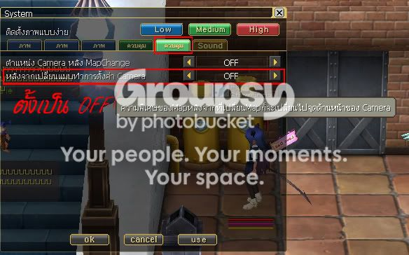
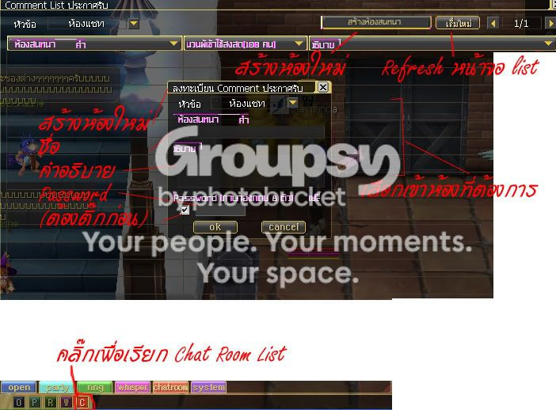

ขอขุดเล็กน้อย พอดีมีคนถามถึงในเกมถึงวิธีเปลี่ยนเลยยกมาอีกรอบ แง่บ
http://eco.froztic.in.th/archive/ecofanclub/
Breeder : เจาะลึกถึงการเป็นผู้ฝึกสัตว์และ Skill ของพวกเขา
http://eco.froztic.in.th/archive/ecofanclub/viewtopic.php?f=25&t=53506
หน้า 4 จากทั้งหมด 6
ใช้ แส้ 90 ได้นะครับ ลองมาแล้ว
จากที่ลองใช้สกิลdecoyของวิ หลังใช้สกิลแปลงเป็นสัตว์เลี้ยงของบรีดเดอร์ผลที่ได้ถ้าเป็นแมวจะได้แมวตัวเล็กๆมีปีกน่ารักดี ตัวอื่นไม่ยักมีปีกแต่ก็ตัวเล็ก(ตอนเควสอันซึไม่เห็นมีปีกเลยอ่ะ)ตัวที่decoyออกมาแล้วเท่ากับตัวสัตว์เลี้ยงเลยนี่ก็วัว แต่พวกเมดนี่ไหงได้แต่เสกลมหว่า - -, (ปล.ตัวเห็บไก่ไม่ได้ลอง เพราะไม่มี ว่างๆใครลองสกิลแปลกๆมาเล่าให้ฟังหน่อย)
น่าสนใจน้า
ขอบคุนสำหรับกะทู้ดีๆจ้า...
ขอบคุนสำหรับกะทู้ดีๆจ้า...
ขออนุญาติขุดกระทู้ดีๆแบบนี้ขึ้นมาหน่อยนะฮะ
ขอใช้กระทู้นี้มาทำไปเลยละกัน แหม่ breeder ก็ฝึกสัตว์หาอะไรคุยฆ่าเวลาไปพลางๆ
การเปลี่ยน Chat room ให้สามารถคุยโต้ตอบผ่าน Chat Box ได้
ก่อนอื่นปกติ Chat Room ที่เพิ่มมาใหม่เมื่อคุยจะขึ้นหน้าต่างใหม่เหมือนเวลาเรากระซิบหาคนอื่น แต่สามารถแก้ให้คุยผ่าน Chat Box ได้เช่นเดียวกันดังนี้
1. เปิด option เลือก ควบคุม แทปที่สอง
2. เลือกหัวข้อที่สอง ตั้งให้เป็น Off (อย่าไปสนใจคำที่เดิมเขียนไว้ยังไงเลย = =")
3. จากนั้นกดที่ปุ่ม C ด้านล่างบริเวณ Chat Box เพื่อเรียกหน้าจอ Chat Room ขึ้นมา
4. เลือกคุยห้องที่ต้องการ หรือถ้าจะสร้างห้องใหม่ ก็สามารถทำได้ดังรูป

5. จากนั้นเมื่อต้องการคุยก็สามารถกดที่ปุ่ม c และปิดหน้าจอ Chat Room ไปได้เลย ผลที่ออกมาจะเป็นการคุยผ่าน Chat Box แทน และข้อความโต้ตอบก็จะออกมาในบริเวณนี้เช่นเดียวกัน
- เมื่อต้องการออกจากห้องให้เรียก Chat Room ขึ้นมาด้วยการกดปุ่มคุยช่องทางอื่นก่อนแล้วกดที่ C อีกครั้งแล้วกดออกจากห้อง
- สามารถทำการใช้ hot key ได้ด้วยการกด Alt + Ctrl
อนึ่ง Hot Key เวลาคุยผ่านช่องต่างๆจะแบ่งเป็น
Ctrl : ข้อความเมื่อกด Ctrl+enter จะโผล่ที่ช่อง Party
Alt : ข้อความเมื่อกด Alt+enter จะโผล่ที่ช่อง Ring
Ctrl+Alt : ข้อความเมื่อกด Ctrl+Alt+enter จะโผล่ที่ช่อง Chat Room
ซึ่งวิธีนี้จะทำให้สามารถคุยเชื่อมกันคนละ ring / party ได้ง่ายขึ้นมาก
อสอง สีเมื่อทำการคุยผ่าน Chat Room จะมีสีเดียวกับ Party ดังนั้นโปรดระวังการสับสนเมื่อท่านคุยอยู่ทั้งใน Chat Room และ Party
การเปลี่ยน Chat room ให้สามารถคุยโต้ตอบผ่าน Chat Box ได้
ก่อนอื่นปกติ Chat Room ที่เพิ่มมาใหม่เมื่อคุยจะขึ้นหน้าต่างใหม่เหมือนเวลาเรากระซิบหาคนอื่น แต่สามารถแก้ให้คุยผ่าน Chat Box ได้เช่นเดียวกันดังนี้


1. เปิด option เลือก ควบคุม แทปที่สอง
2. เลือกหัวข้อที่สอง ตั้งให้เป็น Off (อย่าไปสนใจคำที่เดิมเขียนไว้ยังไงเลย = =")


3. จากนั้นกดที่ปุ่ม C ด้านล่างบริเวณ Chat Box เพื่อเรียกหน้าจอ Chat Room ขึ้นมา
4. เลือกคุยห้องที่ต้องการ หรือถ้าจะสร้างห้องใหม่ ก็สามารถทำได้ดังรูป
5. จากนั้นเมื่อต้องการคุยก็สามารถกดที่ปุ่ม c และปิดหน้าจอ Chat Room ไปได้เลย ผลที่ออกมาจะเป็นการคุยผ่าน Chat Box แทน และข้อความโต้ตอบก็จะออกมาในบริเวณนี้เช่นเดียวกัน
- เมื่อต้องการออกจากห้องให้เรียก Chat Room ขึ้นมาด้วยการกดปุ่มคุยช่องทางอื่นก่อนแล้วกดที่ C อีกครั้งแล้วกดออกจากห้อง
- สามารถทำการใช้ hot key ได้ด้วยการกด Alt + Ctrl
อนึ่ง Hot Key เวลาคุยผ่านช่องต่างๆจะแบ่งเป็น
Ctrl : ข้อความเมื่อกด Ctrl+enter จะโผล่ที่ช่อง Party
Alt : ข้อความเมื่อกด Alt+enter จะโผล่ที่ช่อง Ring
Ctrl+Alt : ข้อความเมื่อกด Ctrl+Alt+enter จะโผล่ที่ช่อง Chat Room
ซึ่งวิธีนี้จะทำให้สามารถคุยเชื่อมกันคนละ ring / party ได้ง่ายขึ้นมาก
อสอง สีเมื่อทำการคุยผ่าน Chat Room จะมีสีเดียวกับ Party ดังนั้นโปรดระวังการสับสนเมื่อท่านคุยอยู่ทั้งใน Chat Room และ Party
จริงๆแล้วอยากจะเสริมนิด1 อาชีพสายไฟเตอร์ ที่เหมาะกับ บรีดเดอร์นะ
ในความคิดผม ไม่ใช้คนอื่นนะ ส่วนตัวผม แอสนะ ท่าจะฝึกมังกรนะ
มีดียังไงเรอะ ใช้สกิลจ๊อบ50ของสะเก๊าได้ จะปล่อยลูกไฟอย่างรวดเร็ว
ท่าใช้สกิลdelay canel ด้วยยิ่งเพิ่มระดับความเร็ว และใช้แอสเซ้าเพิ่มคริ
และสกิลบัฟๆต่าง ผมก็ไม่รู้หรอกว่าไฟเตอร์อันไหนเหมาะสุด ผมเล่นแต่แอส
อาชีพอื่นไม่เคยเล่น เลยไม่รู้อิอิ
ในความคิดผม ไม่ใช้คนอื่นนะ ส่วนตัวผม แอสนะ ท่าจะฝึกมังกรนะ
มีดียังไงเรอะ ใช้สกิลจ๊อบ50ของสะเก๊าได้ จะปล่อยลูกไฟอย่างรวดเร็ว
ท่าใช้สกิลdelay canel ด้วยยิ่งเพิ่มระดับความเร็ว และใช้แอสเซ้าเพิ่มคริ
และสกิลบัฟๆต่าง ผมก็ไม่รู้หรอกว่าไฟเตอร์อันไหนเหมาะสุด ผมเล่นแต่แอส
อาชีพอื่นไม่เคยเล่น เลยไม่รู้อิอิ
ริวงะฮินากิ เขียน:จริงๆแล้วอยากจะเสริมนิด1 อาชีพสายไฟเตอร์ ที่เหมาะกับ บรีดเดอร์นะ
ในความคิดผม ไม่ใช้คนอื่นนะ ส่วนตัวผม แอสนะ ท่าจะฝึกมังกรนะ
มีดียังไงเรอะ ใช้สกิลจ๊อบ50ของสะเก๊าได้ จะปล่อยลูกไฟอย่างรวดเร็ว
ท่าใช้สกิลdelay canel ด้วยยิ่งเพิ่มระดับความเร็ว และใช้แอสเซ้าเพิ่มคริ
และสกิลบัฟๆต่าง ผมก็ไม่รู้หรอกว่าไฟเตอร์อันไหนเหมาะสุด ผมเล่นแต่แอส
อาชีพอื่นไม่เคยเล่น เลยไม่รู้อิอิ
เอ่อ
เราว่าบรีดเดอกะ SU ก็เหมาะนะ เวลาจะเวลสายไฟตจะเอานิ้วจิ้ม ? =w=
แต่สกิวเร่งความเร็วของซอก็มีเหมือนกัน =w=
GrEaGaR เขียน:ริวงะฮินากิ เขียน:จริงๆแล้วอยากจะเสริมนิด1 อาชีพสายไฟเตอร์ ที่เหมาะกับ บรีดเดอร์นะ
ในความคิดผม ไม่ใช้คนอื่นนะ ส่วนตัวผม แอสนะ ท่าจะฝึกมังกรนะ
มีดียังไงเรอะ ใช้สกิลจ๊อบ50ของสะเก๊าได้ จะปล่อยลูกไฟอย่างรวดเร็ว
ท่าใช้สกิลdelay canel ด้วยยิ่งเพิ่มระดับความเร็ว และใช้แอสเซ้าเพิ่มคริ
และสกิลบัฟๆต่าง ผมก็ไม่รู้หรอกว่าไฟเตอร์อันไหนเหมาะสุด ผมเล่นแต่แอส
อาชีพอื่นไม่เคยเล่น เลยไม่รู้อิอิ
เอ่อ
เราว่าบรีดเดอกะ SU ก็เหมาะนะ เวลาจะเวลสายไฟตจะเอานิ้วจิ้ม ? =w=
แต่สกิวเร่งความเร็วของซอก็มีเหมือนกัน =w=
มันแล้วแต่คนที่จะใช้ให้เหมาะกับอาชีพครับ สายsu ใช้คทาไม่ได้ ต้องใช้ปุรูรู
พึ่งทำวันนี้โอ้ว หลังจากไปเวล จน 99 อยู่ 2 เดือน
สนุกมากเลย เลี้ยง เนโก๊ะ
สนุกมากเลย เลี้ยง เนโก๊ะ
มีสกิลของJobที่มากกว่า30ไหมครับ
ไม่มีแล้วครับ แต่ทั้งนี้อาจจะมีคลาสเพิ่มหรืออาชีพเพิ่มมาครับเช่น Gardener และอาจจะมาอีกหลายๆอาชีพครับ รอดูไปก่อน
plug เขียน:ทำเควสเอามังกรดำแล้วสู้ไม่ได้อะตายคาที่เลย
ผมลากหมามันมาเก็บก่อนน่ะครับ หมามันจาเดินเร็วกว่าเจ้าของมัน
จากนั้นก้อsoloเจ้าArcให้หงายเก๋งได้เลยครับ
1-1มันไม่เก่งอะไรเลย
กระทู้บวม - -*
เข้าเรื่อง
เข็มกลัดบรีดเดอร์ถ้าพังไป
จะไปรับอันใหม่ได้มั้ย

เข้าเรื่อง
เข็มกลัดบรีดเดอร์ถ้าพังไป
จะไปรับอันใหม่ได้มั้ย
Tamie เขียน:กระทู้บวม - -*
เข้าเรื่อง
เข็มกลัดบรีดเดอร์ถ้าพังไป
จะไปรับอันใหม่ได้มั้ย
ได้ครับ แต่ต้องซื้อเอานะ ถ้าไม่อยากเสียเงินก็อย่าให้พัง หรือ เอาตัวอื่นไปทำมาอีก หรือ หลอมเอาก็ได้